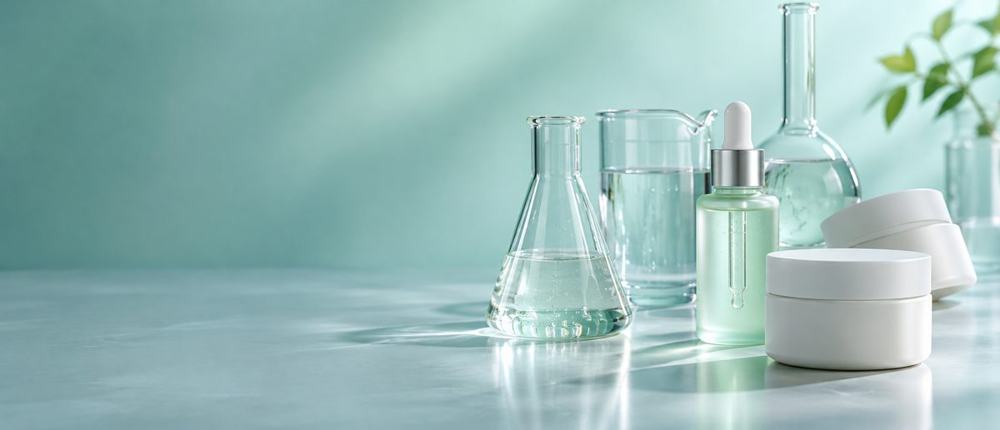

내 피부 고민부터 알아보세요. 고민을 선택하면 관리 방법과 관련 성분, 제품까지 이어서 확인할 수 있습니다.
고민을 선택하면 고민별 관리로 바로 이동합니다.
지금 시기에 맞는 관리 글을 모았습니다.
6문항 설문이나 로이와의 대화로 시작해, 매일 기록하고 리포트로 변화를 확인합니다.
피부과 전문의가 임상 현장에서 마주한 피부 고민을 출발점으로, 피부과학을 바탕으로 한 관리 원칙을 세워 제품과 정보를 만듭니다
브랜드 이야기 보기